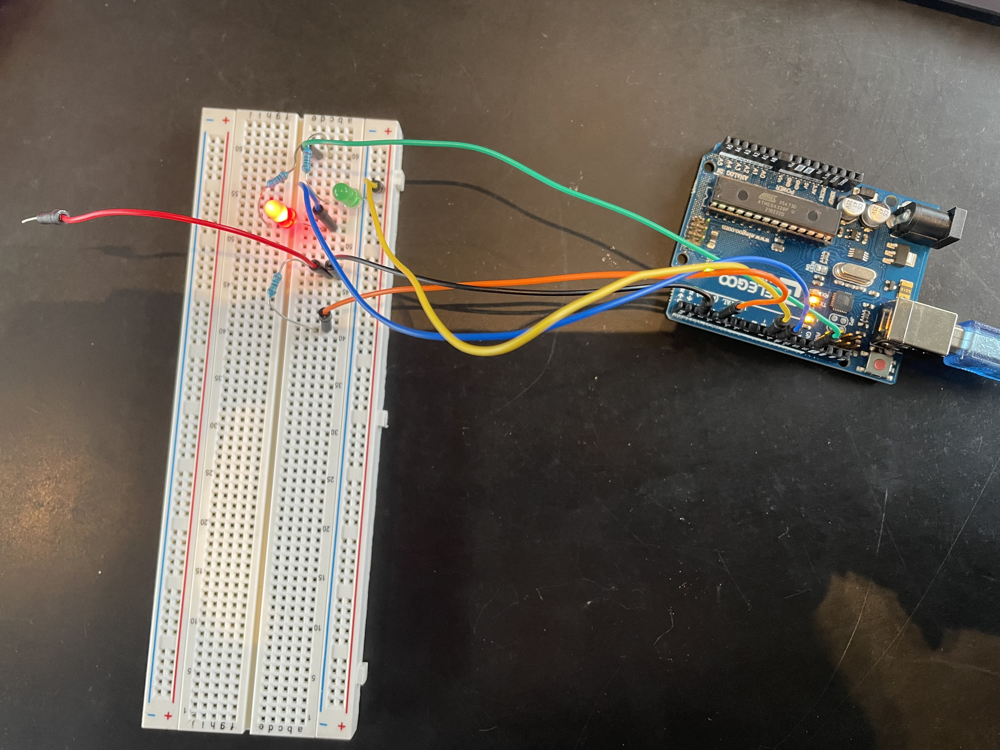
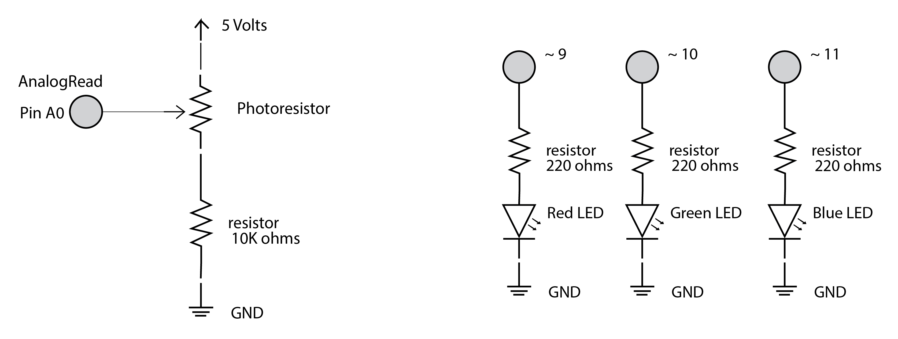
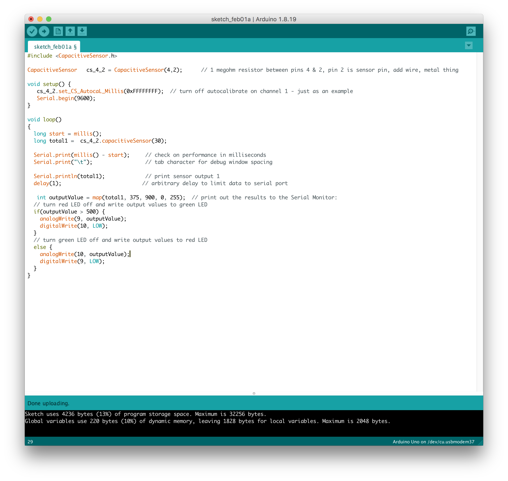

This shows the capacitive touch being used to control whether a green LED is turned on or a red LED is turned on.

This picture shows the circuit.

This is the schematic for the circuit. The resistance was calculated in the following way for both the red LED and the green LED. v = (Power source) - (Voltage Drop for LED) v = 5V -1.8V = 3.2V I = 30 mA (Max current through red LED) R = V/I = 3.2V/O.03A = 106.7 Ohms Because of these calculations, I know that I must use a resister that is larger than 106.7 Ohms. I decided to use a 220 Ohms resisters for both LEDs because of this. I used a 1 megaohm resistor for the capacitive touch part of the circuit because in order for absolute touch to activate. I used a 1 M ohms resister because I didn't need the capacitive touch to be very sensitive and wanted the sensor to be fast.

#include
This is the arduino code that I used to make the LEDs turn on in the particular pattern. The code is commented on the code snippit.